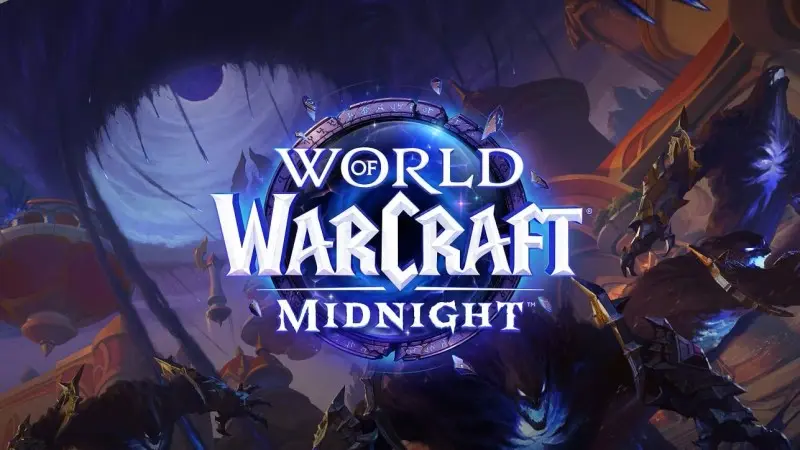

World of Warcraft - Backstory
World of Warcraft (WoW) - is a 2004 massively multiplayer online role-playing (MMORPG) video game developed and published by Blizzard Entertainment for Windows and macOS. Set in the Warcraft fantasy universe, World of Warcraft takes place within the fictional planet Azeroth, approximately four years after the events of the previous game in the series, Warcraft III: The Frozen Throne.[3] The game was announced in 2001 and was released for the 10th anniversary of the Warcraft franchise on November 23, 2004. Since launch, World of Warcraft has had ten major expansion packs: The Burning Crusade (2007), Wrath of the Lich King (2008), Cataclysm (2010), Mists of Pandaria (2012), Warlords of Draenor (2014), Legion (2016), Battle for Azeroth (2018), Shadowlands (2020), Dragonflight (2022), and The War Within (2024). Two further expansions, Midnight and The Last Titan, were announced in 2023.
Inspired by other MMORPGs, particularly EverQuest, World of Warcraft allows players to create a character avatar and explore an open game world in third- or first-person view, exploring the landscape, fighting various monsters, completing quests, and interacting with non-player characters (NPCs) or other players. The game encourages players to work together to complete quests, enter dungeons and engage in player versus player (PvP) combat, however, the game can also be played solo without interacting with others. The game primarily focuses on character progression, in which players earn experience points to level up their character to make them more powerful, obtain better equipment by defeating monsters and completing challenges, and buy and sell items using in-game currency, among other game systems.
As with other MMORPGs, players control a character avatar within a game world in third- or first-person view, exploring the landscape, fighting various monsters, completing quests, and interacting with non-player characters (NPCs) or other players. Also similar to other MMORPGs, World of Warcraft requires the player to pay a subscription by using a credit or debit card, using prepaid Blizzard game cards or using a WoW Token purchased in-game. Players without a subscription may use a trial account that lets the player's character reach level 20, but has many features locked.
For more information check out the World of Warcraft Wikipedia page here[1]
Midnight Expansion Features

World of Warcraft: Midnight retains the core mechanics of World of Warcraft while introducing several new gameplay systems and updates. The expansion adds a player housing feature that allows players to obtain and customize personal spaces within Azeroth using items earned through gameplay, professions, and achievements. New and reworked zones are introduced, including significant updates to the Quel'Thalas region, alongside additional open-world activities designed to provide more dynamic encounters. The expansion also expands endgame content through new Delves designed for solo and small-group play, additional dungeons and raids, and improvements to user-interface and quality-of-life systems intended to streamline player progression.[3]
Housing
In Housing, everyone gets a home: no lotteries, no costs, no upkeep required. Share it across the warband, decorate, and visit friends cross-faction. Pick a plot in public or private Neighborhoods: live next to other players, work together, and reap the rewards of being in a communal setting. Decorate with easy to use tools, from cozy hideouts to legendary showcases of past adventures with decor and rewards from every corner of Azeroth. Monthly neighborhood-wide events and activities bring everyone together to unlock themed decorations.[2]
Story of Midnight
The narrative of Midnight is set primarily in and around the kingdom of Quel'Thalas and focuses on the escalating conflict between the forces of Light and Void. The story continues directly from events depicted in The War Within, as the void entity Xal'atath leads an invasion that threatens to engulf Azeroth in darkness. Blizzard has described the expansion as a key chapter in a longer, interconnected storyline intended to unfold across multiple future expansions.[3]
It was a last-ditch effort for the heroes of Azeroth to ally with Xal'atath to stop the world-ending threat posed by the powerful voidlord, Dimensius, the All-Devouring, during the events of World of Warcraft: The War Within. But the schemes of the void's harbinger left the desperate heroes vulnerable, and now Xal'atath and her forces are ready to take on the Light's mightiest champions and snuff out their most powerful beacon on Azeroth, the Sunwell. World of Warcraft: Midnight is the next installment of the Worldsoul Saga where players must return to Quel'Thalas, home of the Blood Elves, to mount a valiant defense. The lush forests of Eversong and the deep jungles of Zul'Aman, which have been fully rebuilt and reimagined, will serve as the starting backdrop of this epic new chapter. Along the way, players will work to earn the trust of the enigmatic and reclusive Haranir, an ancient people that pre-date many of Azeroth's oldest races. With allies in tow, both old and new, heroes will need to venture into the chaos of the Voidstorm, where Xal'atath has established a foothold and plots her campaign bent on dominating the worldsoul of Azeroth.[2]
And More...
Main Hub
The iconic blood elf capital of Silvermoon City, fully rebuilt since The Burning Crusade, will serve as a player hub in Midnight. Faithfully reimagined and greatly expanded, Silvermoon has opened its gates to both factions in order to combat the Void -- at least for now.[6] Roughly two thirds of Silvermoon will function as a sanctuary city, while the rest will remain Horde-exclusive. The developers were influenced by feedback concerning a prospective return to Silvermoon and took steps to ensure Horde players felt they were not "losing a city," but rather allowing the Alliance to experience it as guests. The tensions that arise from this arrangement will play into the story.[2]
Upcoming Development
World of Warcraft: Midnight was officially revealed during Gamescom 2025 alongside a cinematic trailer and early gameplay footage. The expansion entered closed beta testing following its announcement, with access granted through invitations and select pre-purchase options. Developers stated that Midnight was designed to strengthen long-term narrative cohesion within the franchise while introducing systems that had been requested by players for many years.[3]